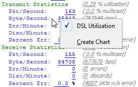
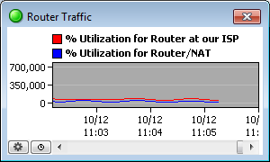

Creating Charts
InterMapper charts display the history of one or more variables. This information can also be saved to a log file for further analysis.
- Open one of the status windows as described in Viewing Status Windows.
- Tear the status window off to create a new window.
- Click on any of the underlined values. If the underlined value appears any existing charts, a list of charts appears, along with a Create Chart option.

- Click Create Chart. A new chart appears.
- To add more variables to the chart, drag their underlined values to the chart. The example below shows a typical chart.


A chart showing two traces.
For more information about charts, see Using Charts.